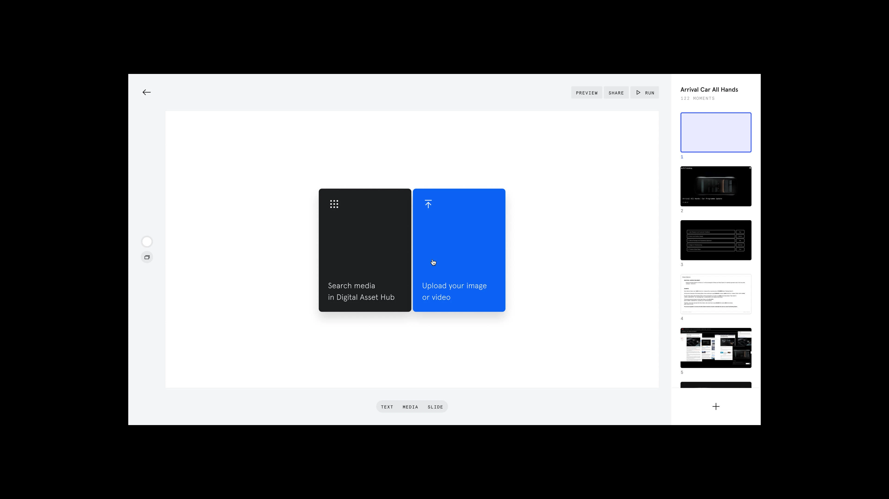
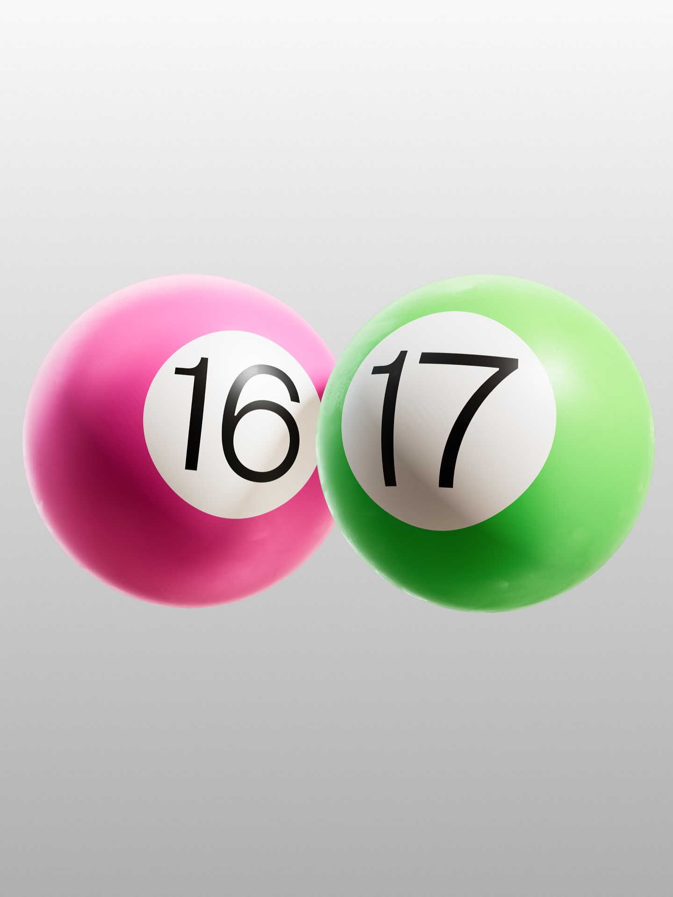
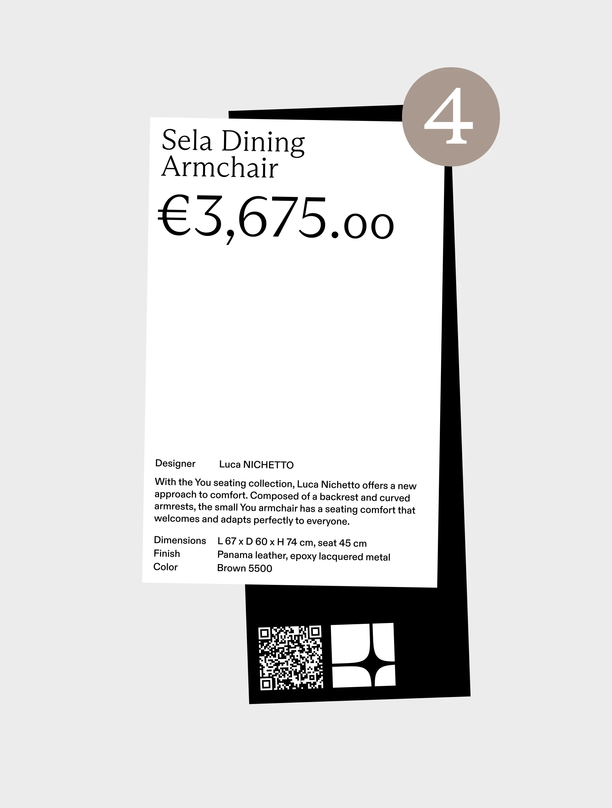
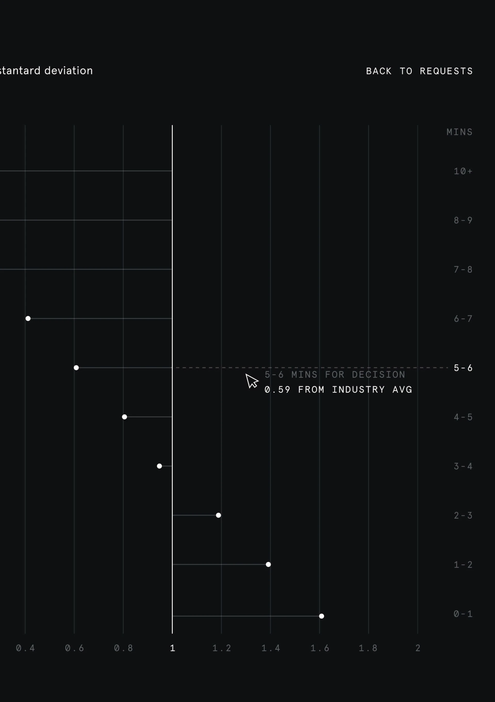
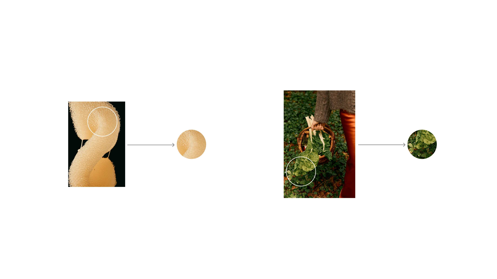
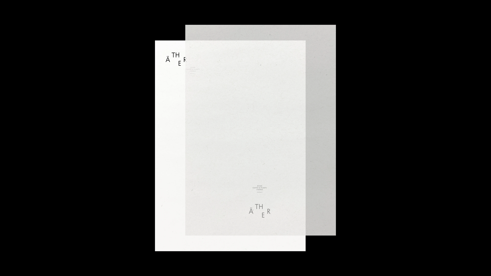

Сергей пришёл в дизайн из танцев в пандемийную осень. Для него это ремесло с пользой: мудборды по неделям и страх однотипного AI-контента.
Какое определение ты бы дал культуре дизайна? Принципы, ценности, ритуалы, без которых хороший проект не получается?
Начну чуть-чуть издалека, потом перейду к проектной деятельности.
Для меня дизайн и вся эта культура не носят ремесленный характер в смысле «дизайн ради дизайна». Есть ребята – художники и творцы, которые рисуют, потому что не могут без этого жить. Они созидают, практикуют. Я тоже был в таком потоке во время обучения, мы просто рисовали, коллаборировали. Но у меня произошла деформация: я начал говорить себе, что мне очень важно, чтобы это что-то кому-то нужно было.
Мой последний концепт без коммерции был года три назад. Я скучаю, но всегда задаю себе вопрос: а будет ли у меня дизайн, если он не будет кому-то нужен? Это кризисный момент. Но то, что я нахожу в ремесленности, очень важно – мне нравится, что это может кому-то помочь.
Мне нравится трактовка из книги «Design Code» (автор – профессор филологических наук, по-моему, фамилия Лола, точно не помню): дизайн, это просто жидкость, которую можно адаптировать под абсолютно любой запрос. Это универсальнее, чем загонять в рамки. Вообще неважно, в каком месте ты этим занимаешься – как ты хочешь определять функцию, так она и должна определяться.
Для меня важно не окутывать ремесленность только коммерцией. Скорее это ритуал, что ты созидаешь. Я говорю про конечную, завершённую пользу, которую могу кому-то подарить своей работой. В плане шотов и просто кайфа это переросло в R&D-процесс: можешь выложить шот в канал, но нет кропотливого процесса в шесть месяцев концепции на один кейс. Это смена фокуса.
Будет ли у меня дизайн, если он не будет кому-то нужен? Это кризисный момент.
– Сергей Бреус
Как ты в дизайн пришёл? Какие точки повлияли на восприятие сферы?
Всё началось с депрессивной фазы. Я начал заниматься дизайном только на третьем курсе, в начале пандемии. До этого я очень долго занимался танцами – лет десять. Они дали мне фундамент: понимание музыки, культуры, моды, fashion. Но была сильная стагнация: долго занимался, а роста не было.
В университете я не знал, чем хочу заниматься. Потом пришёл на офлайновый бесплатный интенсив по дизайну. Нам рассказывали, что такое UX Design. На то время это было максимально адекватно. Потом началась пандемия, студия выкатила трёхдневный интенсив, я жёстко подсел. Помню, неделю из Figma не вылезал, потому что было так интересно. Я накидывал скетчи, экраны. Было очень модно накинуть первый экранчик сайта.
Помню эйфорические воспоминания: я столько времени этому уделял, что не знал, какой день недели. У меня были каникулы, пандемия, никуда не нужно идти, нам всё заочно проставили. Я очень вдохновляюще прошёл обучение.
Когда заканчивал курс, уже были вайбы по работе. Я как-то сразу был настроен на вайб поработать в офисе. Моя первая работа – офис, я ходил девять месяцев каждый день к десяти утра. Даже приходил к семи-восьми, чтобы пару часов перед офисом что-то поработать, посмотреть лекции.
Потом пошли серьёзные проекты: «Прагматика» → F61 → параллельно IMEQ Club (Саша Лагута, Сергей Гуров) → ONI.


Ключевая точка – переход в F61. Маленькое четырёхчеловеческое агентство: два арт-директора и одна дизайнерка – Мамарик Терилова, Света Ломакина, Сергей Полухин. Потом пришёл менеджер – стало пятеро.
Агентство брало исключительно fashion-бутиковые проекты. Самые яркие проекты делала студия Tattoo Mood – Monochrome, их я не застал. Я пришёл, когда они делали Anaïs, участвовал в Terzof, делали вместе с Morrodin.
Эти проекты на меня повлияли, потому что они делали пиздатую коммерцию, которая доходила до продакшена. Все бренды, которые я озвучил, сейчас существуют. Нужно было перехватывать это ощущение. Арт-директора безумно самобытные, не кайфуют от того, от чего кайфуют остальные.
Какое-то время мне было очень сложно работать, потому что мы не могли найти точки соприкосновения. Потом нашли, и работа пошла вверх. Я погрузился в больший процесс дизайна. Раньше жил в закутке веб-дизайна, а тогда познакомился с идентикой, с креативной составляющей, метафорой, процессом поиска. Участвовал в съёмках, кампейнах, и понял, насколько все эти элементы формируют видение бренда.
Главное влияние – Сергей Полухин, мой первый арт-директор. Он причастен к тому, как выглядит Monochrome, Terzof, Tumut. Безумно талантливый. Наши отношения начались с лёгкого абьюза, я говорю в шутку. Нужно было объяснить парню, который пришёл и считает, что он всё знает, почему он рисует хуйню. Тогда я его не понимал и считал, что он меня абьюзит. Сейчас я ему безумно благодарен за все знания, которые он мне вложил.
Большую часть времени мы работали – 80%. У меня был дизайн до него и дизайн сейчас. Это как два конца медали. С одной стороны, это сильно повлияло на мой рост – это супер. Но с другой, я всё равно отнял частичку его в себя. Стараюсь никого не абьюзить – это шутка.

Какая литература и публичные выступления повлияли?
Первое – фильм «Helvetica». Когда я его посмотрел в 360p на VK, это произвело тотальное впечатление. Смотрел, когда был тревожен и не знал, куда расти. Помню, смотрел три раза. Потом ходил в Петербурге в кафе «Люди Кофе», там решили показать «Helvetica» и накормить всех швейцарским блюдом, круассаном с сыром и джемом. Я сидел, ел и смотрел «Helvetica» на проекторе. Это было прикольно.
Помню, думал: теперь буду всё рисовать Helvetica. Открыл – кириллица. Это жестоко по отношению к нам, но кириллица – это действительно свой мир.
Потом я взял интенсив «Композиция и проектирование» Сергея Гурова на Bang-Bang Education. Меня впечатлило не столько общение с Сергеем, сколько пропедевтический курс. Перед началом он выслал лекции для изучения. Они были написаны на основе книги Эмиля Рудера «Типографика». Сергей рассказал основные принципы через свой опыт.
Меня тогда сильно перевернуло: открытая и закрытая композиция, динамичное равновесие, понятие массового дизайна. Какие-то физические, кинетические свойства – как элементы притягиваются друг к другу или, наоборот, висят крепко.
После курса я пошёл и купил Эмиля Рудера «Типографика» в оригинале. Полностью прочитал, осознал. Когда ты сам это читаешь после курса – это мощно.
Какие рабочие практики и ритуалы тебя поддерживают и заряжают?
Во-первых, я рефа-дрочер. Я признался на проекте, что я рефа-дрочер. Я могу собирать неделями мудборды. Картинки для меня очень много значат. У меня есть страх неопределённостью – очень сильный. Когда я не понимаю, как рисовать проект, я его не начну, пока хотя бы для себя на картинках его не сложу.
Это очень важная практика. Даже если работаю один, я работаю с командой; а с командой тем более. Как я должен объяснить дизайнеру, что мы будем рисовать, если наши сознания не синхронизированы?
Умение находить решения – это не прямой референс, а подход из стратегии, из семиотики. Мы формируем пространство, должны в него погрузиться, научиться в нём жить, понимать, что мы собираем, как работаем с типографикой. Это очень помогает в работе с бренд-дизайнерами: они сделали идентику, а я рисую веб. Я должен декодировать их идентику: правильно ли я её понимаю и как её преломить? Идентика – это не завершённая история, это что-то продолжающееся, она должна жить на других носителях. Рефа – номер один, чем мне надо.
Второе, я зацикленный на ответах. Я спросил у ChatGPT, в чём мои проблемы, и он сказал: тебе нужно вайбить, расслабиться, порисовать. Но мне очень важно находить постоянные ответы, почему мы это делаем. Это функция? Бизнес-решение? Метафора?
Все свои концепции я стараюсь соединить какой-то нитью. Даже если кажется незначительным – мне нужно найти объяснение. Не могу показать дизайн и сказать «это прикольно», разве что когда показываю R&D-процесс. Но если говорю про вдохновение и ритуал – должен уметь объяснить хотя бы на пальцах.
Я люблю простоту. У меня есть бзик на сложные решения: смотришь и думаешь, сколько часов он выдрачивал, многоходовочка. Но прикольное – это когда находишь решение, когда листок пустой и всё чисто. Внутри чувствуешь, что эта простота настолько сложная, что к ней надо было прийти через тысячи итераций. К такой простоте хочется приходить всегда.
Личные ритуалы: я ненавижу вставать поздно. Последние полтора-два года я встаю в шесть-семь утра ежедневно. Кроме выходных, я не люблю вставать поздно. Мой пик активности до обеда, до трёх-четырёх часов. После этого начинается рутина. Все концептуальные, сильные вещи я делаю рано утром. Особенно если это фрилансовое – концепции делаю перед работой. Что-то накидаю, посижу, подумаю, потом начну основную работу.
Я рефа-дрочер. У меня есть страх неопределённостью – очень сильный. Я не начну проект, пока хотя бы для себя на картинках его не сложу.
– Сергей Бреус
Простота настолько сложная, что к ней надо было прийти через тысячи итераций. К такой простоте хочется приходить всегда.
– Сергей Бреус



Есть ли у тебя универсальный рецепт проекта? Vision, польза, метрики, бизнес-задача?
Мой главный приоритет, чтобы было пиздато. Чтобы ты смотрел и думал: да, а эта сука. Это не работает, потому что я примерно понимаю, как построить идентику на чистейших моментах, чтобы было модненько, красивенько. Это можно сделать. Но сделать что-то по-настоящему крепко – это сложно.
Есть внутренний критик, который всегда лезет: это не то, это не то. Проблема в том, что ты что-то не знаешь, и пока это не почувствуешь, сложно объяснить.
Всему должен быть ответ. Когда я говорю «всему должен быть ответ» – это очень ёмкое объяснение. Есть концепция. Концепция должна отвечать на вопросы: зачем мы это делаем? Для чего? Для кого? Куда это должно развиваться? Нет правильного ответа – есть адекватное прочтение и понимание с точки зрения копания по смыслу.
В последних проектах я начинаю со стратегии из брендинга. Нужно понять, куда вообще бренд растёт. Если можем ответить, в чём наша концепция и зачем – очень легко строится визуал.
Это не то, что нам нужно дизайном выразить концепцию. Мы просто должны её усилить. Как в вебе: есть бизнес-задача. Странно делать что-то, что должно генерировать прибыль, и говорить, что это заточено под метрики. Пока не попробуем, не узнаем. Если работаем на бизнес – стараемся, чтобы всё работало.
В макете очень сложно не найти решение, которое решает задачу. Но найти решение, которое отражает стратегию и смыслы, которые формирует бренд конкретно той задачей, это самое сложное. Найти именно то решение, которое складывается в твою концепцию, в твоё направление. Самое важное, чтобы это не просто решало задачу, а усиливало, подчёркивало эмоциональные составляющие. Чтобы пользователь, клиент, потребитель чувствовал какой-то набор эмоций от этого решения.
Мой главный приоритет, чтобы было пиздато. Чтобы ты смотрел и думал: да, а эта сука.
– Сергей Бреус
Что такое хороший дизайн? Можно ли его определить?
Максимально честно: это дизайн, к которому задали функцию и оболочку, он её проходит и выполняет. Когда дизайн вызывает эмоцию и выполняет то, ради чего создан, это хороший дизайн.
Что можно назвать хорошим или плохим в концепции – это сложно, потому что дизайн ощущается. Недавно я видел работу знакомой дизайнерки, которая занимается дизайном за шоу. Это очень видно. От этого немного страшно, потому что мы живём в мире искусственного контента.
Мы живём в искусственно порождённом контенте. Даже если посмотреть на блогеров и соцсети, мы живём в контенте, к которому мы не относимся. Потому что он стоит очень много времени: morning routine, прогулки, которые все заготовлены. Нет спонтанного контента.
А потом ещё подключается AI-контент. Это страшно жёстко. Самое страшное, когда люди, которые давно в профессии, этому обучают и считают нормальным. Они сами пользуются штуками, которые выглядят майонезно, нереалистично, и создают пласт контента, который отвратителен.
Контент в дизайне – самое сложное. Поэтому есть съёмки, 3D-артисты, CGI-артисты. Это всё нужно ценить. История с AI может сильно ускорить процесс, дать быстрый результат. Но даже с ней нужно сидеть и копаться до последнего. Меня пугает, что AI может породить большое количество контента, который мы начинаем видеть в реальном мире. Вот это страшно.
Если же говорить об AI как об инструменте, это очень крутая вещь, которая может упрощать процесс обучения, путешествия и ресёрча.
Я признаюсь – люблю контент, когда скрещивают мультивселенные. Например, «Звёздные войны» в стиле Хаяо Миядзаки. Это попсовое, но прикольно – элемент вдохновения и кайфа. Это классный контент. Но очень тонкая грань между этим и помойкой, которая засирает интернет. Для меня это помойка. Я не хочу, чтобы это было в интернете, не хочу смотреть.
Самое страшное, когда люди, которые давно в профессии, сами пользуются штуками, которые выглядят майонезно, нереалистично, и создают пласт контента, который отвратителен.
– Сергей Бреус
О практике
Сергей Бреус – сеньер диджитал-дизайнер в ONY.